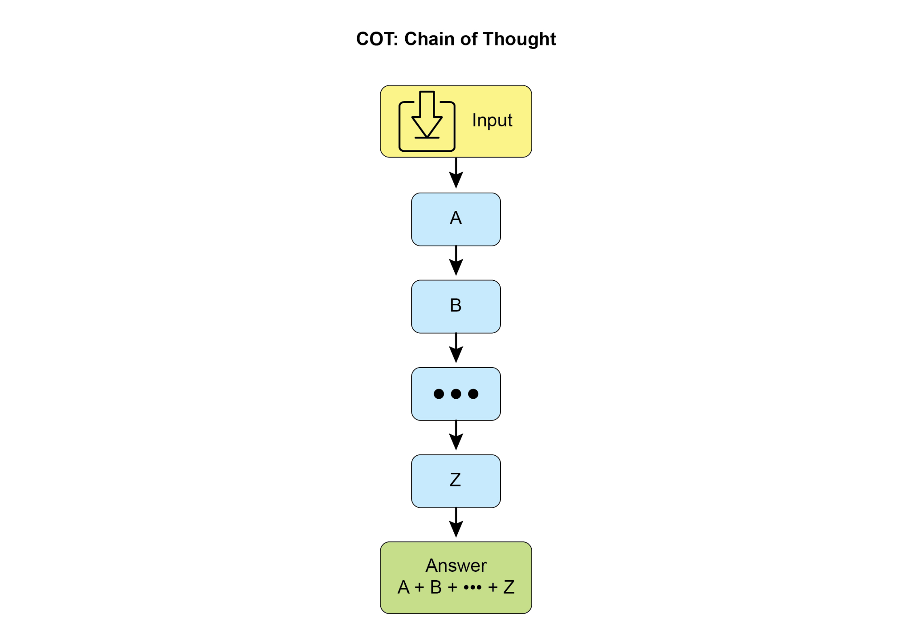
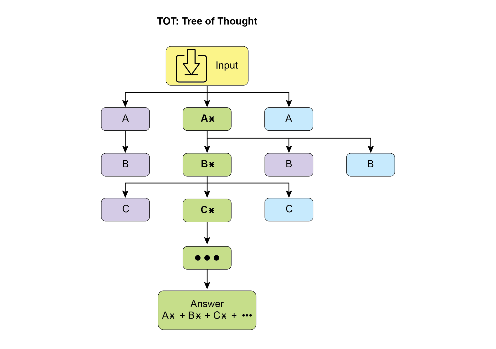
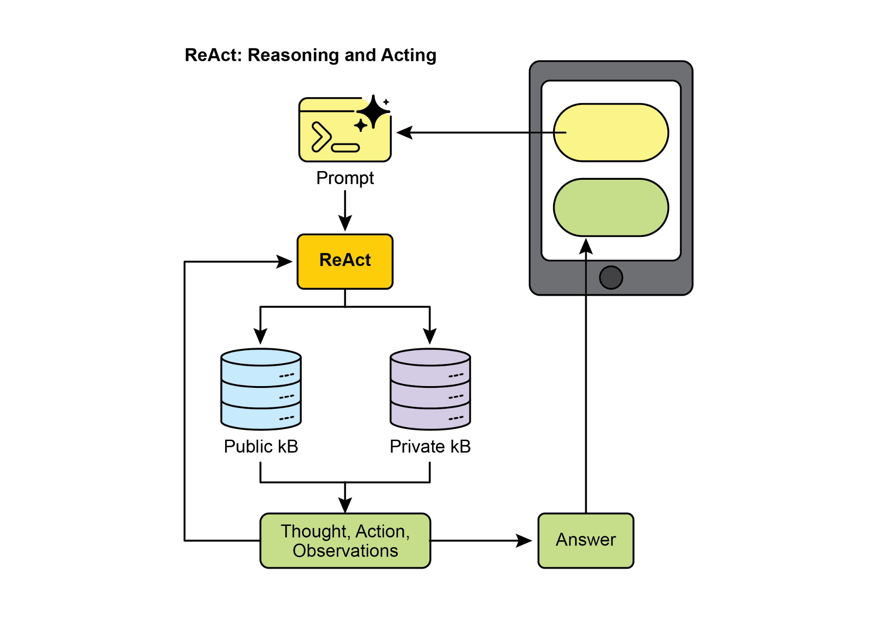
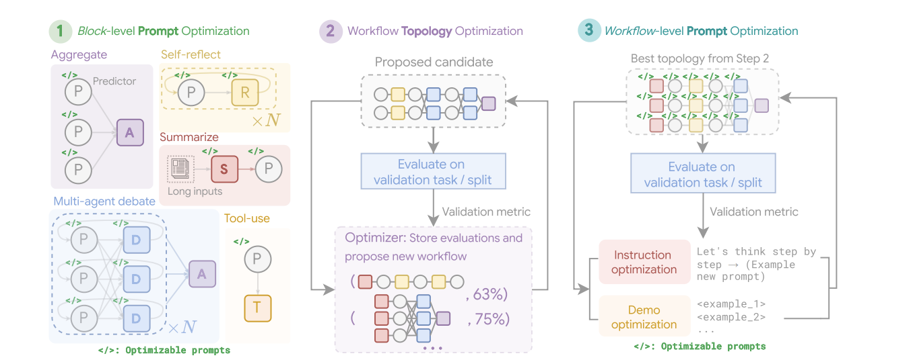
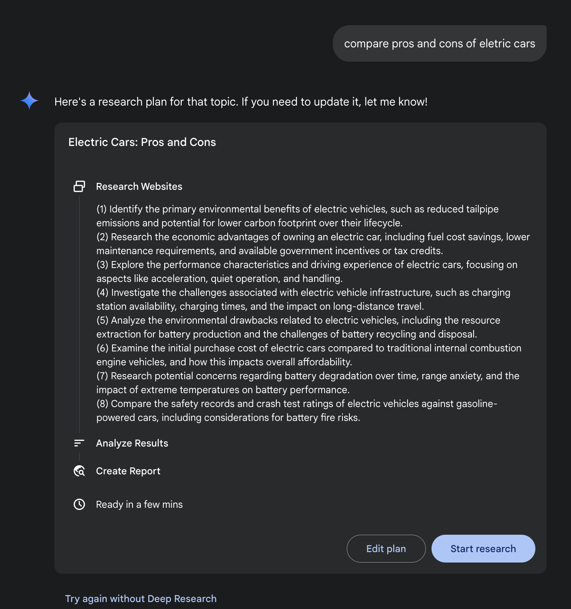
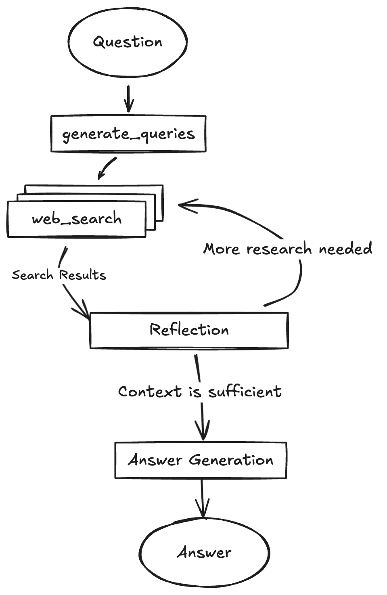
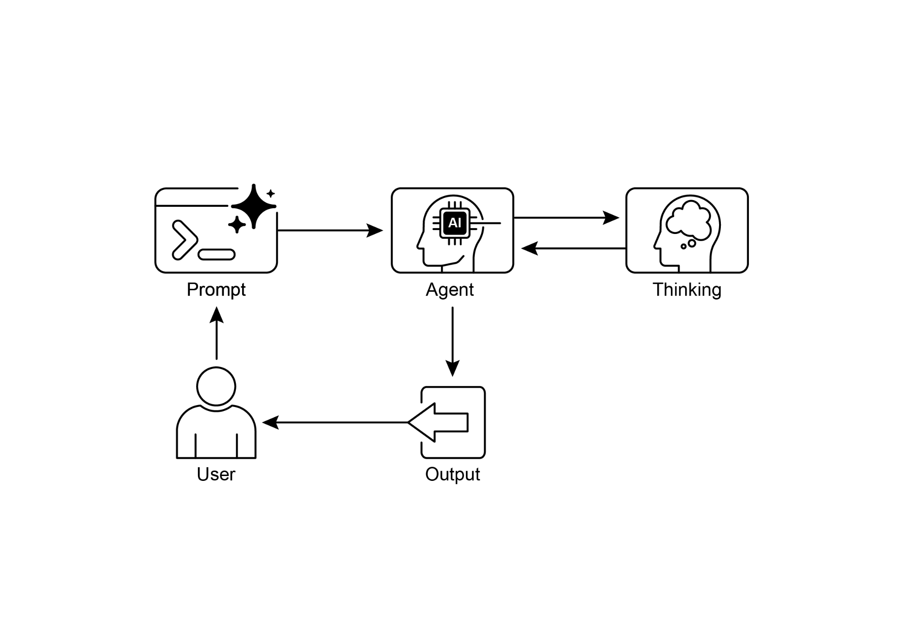

读书 · Agentic Design Patterns · 中英对照
第 17 章 · 推理技术 Reasoning Techniques
Chapter 17: Reasoning Techniques · 《Agentic Design Patterns》 · Antonio Gulli · 2025
系统讲解智能体多步推理方法及推理时计算资源扩展原则。
← 返回导读 原书 PDF 上一章:第16章 下一章:第18章
本章要点
① 思维链 CoT 通过分步推理提升复杂任务准确性与透明度 ① 思维树 ToT 与自我修正支持回溯、多路径探索与迭代优化 ① ReAct 将推理与工具行动结合，形成 Thought-Action-Observation 循环 ① Scaling Inference Law 表明增加推理时计算可让小模型超越大模型
本章一图流
思维链 CoT分步推理，提升准确与透明→思维树 ToT多路径探索，回溯并自我修正→ReAct 循环推理与工具行动交替推进→推理时扩展增加推理计算，小模型可胜大模型
从分步推理到多路径探索、工具行动，再到推理时计算扩展，层层递进。
原书插图







本章划线句
划线句(逐字校验)
"A core principle among these advanced methods is the allocation of increased computational resources during inference."
为什么值得划线:点明全章核心：推理时计算资源分配是高级推理方法的基础。
划线句(逐字校验)
"This iterative loop of “Thought, Action, Observation, Thought...” allows the agent to dynamically adapt its plan, correct errors, and achieve goals requiring multiple interactions with the environment."
为什么值得划线:精炼概括 ReAct 的核心循环机制与自适应能力。
正文(英中对照)
第17章：推理技术 Chapter 17: Reasoning Techniques
"This chapter delves into advanced reasoning methodologies for intelligent agents, focusing on multi-step logical inferences and problem-solving. These techniques go beyond simple sequential operations, making the agent's internal reasoning explicit. This allows agents to break down problems, consider intermediate steps, and reach more robust and accurate conclusions. A core principle among these advanced methods is the allocation of increased computational resources during inference. This means granting the agent, or the underlying LLM, more processing time or steps to process a query and generate a response."
本章深入探讨智能体（intelligent agents）的高级推理方法，聚焦于多步逻辑推理与问题求解。这些技术超越了简单的顺序操作，使智能体的内部推理过程显式化。这允许智能体分解问题、考虑中间步骤，并得出更稳健、更准确的结论。这些高级方法的一个核心原则是在推理期间分配更多的计算资源。这意味着给予智能体或底层 LLM 更多的处理时间或步骤来处理查询并生成响应。
导读注:揭示高级推理的核心：推理期增加计算资源，让智能体显式多步思考。
"Rather than a quick, single pass, the agent can engage in iterative refinement, explore multiple solution paths, or utilize external tools. This extended processing time during inference often significantly enhances accuracy, coherence, and robustness, especially for complex problems requiring deeper analysis and deliberation."
智能体（agent）不必只做一次快速的单遍处理，而是可以进行迭代式精炼、探索多条解题路径，或利用外部工具。这种在推理（inference）阶段延长的处理时间，往往能显著提升准确性、连贯性和鲁棒性，尤其对于需要更深入分析与深思的复杂问题而言。迭代式精炼与延长推理时间是提升复杂任务表现的关键。
导读注:强调推理阶段多花时间比单遍快答更能提升复杂任务的准确性与鲁棒性。
"Practical Applications & Use Cases Practical applications include: ● Complex Question Answering: Facilitating the resolution of multi-hop queries, which necessitate the integration of data from diverse sources and the execution of logical deductions, potentially involving the examination of multiple reasoning paths, and benefiting from extended inference time to synthesize information. ● Mathematical Problem Solving: Enabling the division of mathematical problems into smaller, solvable components, illustrating the step-by-step process, and employing code execution for precise computations, where prolonged inference enables more intricate code generation and validation. ● Code Debugging and Generation: Supporting an agent's explanation of its rationale for generating or correcting code, pinpointing potential issues sequentially, and iteratively refining the code based on test results (Self-Correction), leveraging extended inference time for thorough debugging cycles. ● Strategic Planning: Assisting in the development of comprehensive plans through reasoning across various options, consequences, and preconditions, and adjusting plans based on real-time feedback (ReAct), where extended deliberation can lead to more effective and reliable plans. ● Medical Diagnosis: Aiding an agent in systematically assessing symptoms, test outcomes, and patient histories to reach a diagnosis, articulating its reasoning at each phase, and potentially utilizing external instruments for data retrieval 1 2 (ReAct)."
实际应用与用例 实际应用包括：● 复杂问答：促进多跳查询的解决，这类查询需要整合来自不同来源的数据并执行逻辑推理，可能涉及对多条推理路径的考察，并受益于扩展的推理时间来综合信息。● 数学问题求解：使数学问题能够被分解为更小的可解组件，展示逐步过程，并采用代码执行进行精确计算，其中延长的推理时间能够实现更复杂的代码生成与验证。● 代码调试与生成：支持智能体解释其生成或修正代码的理由，按顺序定位潜在问题，并基于测试结果迭代优化代码（自我修正，Self-Correction），利用扩展的推理时间进行彻底的调试循环。● 战略规划：通过对各种选项、后果和前提条件进行推理，协助制定全面的计划，并基于实时反馈调整计划（ReAct），其中延长的深思熟虑能够带来更有效、更可靠的计划。● 医疗诊断：帮助智能体系统性地评估症状、检测结果和患者病史以达成诊断，在每个阶段阐明其推理过程，并可能利用外部工具进行数据检索 1 2（ReAct）。
导读注:列举五类典型应用，突出扩展推理时间与ReAct/自我修正如何提升复杂任务表现。
"Increased inference time allows for a more comprehensive differential diagnosis. ● Legal Analysis: Supporting the analysis of legal documents and precedents to formulate arguments or provide guidance, detailing the logical steps taken, and ensuring logical consistency through self-correction. Increased inference time allows for more in-depth legal research and argument construction. Reasoning techniques To start, let's delve into the core reasoning techniques used to enhance the problem-solving abilities of AI models.. Chain-of-Thought (CoT) prompting significantly enhances LLMs complex reasoning abilities by mimicking a step-by-step thought process (see Fig. 1)."
增加推理时间可以实现更全面的鉴别诊断。● 法律分析：支持对法律文件和判例的分析，以形成论证或提供指导，详细说明所采取的逻辑步骤，并通过自我纠正确保逻辑一致性。增加推理时间可以实现更深入的法律研究和论证构建。推理技术 首先，让我们深入探讨用于增强 AI 模型问题解决能力的核心推理技术。思维链（Chain-of-Thought，CoT）prompt 通过模仿逐步思考过程，显著增强 LLM 的复杂推理能力（见图 1）。
导读注:点出增加推理时间对鉴别诊断与法律分析的价值，并引出 CoT 技术。
"Instead of providing a direct answer, CoT prompts guide the model to generate a sequence of intermediate reasoning steps. This explicit breakdown allows LLMs to tackle complex problems by decomposing them into smaller, more manageable sub-problems. This technique markedly improves the model's performance on tasks requiring multi-step reasoning, such as arithmetic, common sense reasoning, and symbolic manipulation. A primary advantage of CoT is its ability to transform a difficult, single-step problem into a series of simpler steps, thereby increasing the transparency of the LLM's reasoning process."
CoT prompt 不直接给出答案，而是引导模型生成一系列中间推理步骤。这种显式拆解使 LLM 能够将复杂问题分解为更小、更易管理的子问题，从而加以解决。该技术显著提升了模型在需要多步推理的任务上的表现，例如算术、常识推理和符号操作。CoT 的一个主要优势在于，它能够将困难的单步问题转化为一系列更简单的步骤，从而提高 LLM 推理过程的透明度。
导读注:点明 CoT 的核心：把难题拆成可管理的子问题，并提升推理透明度。
"This approach not only boosts accuracy but also offers valuable insights into the model's decision-making, aiding in debugging and comprehension. CoT can be implemented using various strategies, including offering few-shot examples that demonstrate step-by-step reasoning or simply instructing the model to "think step by step." Its effectiveness stems from its ability to guide the model's internal processing toward a more deliberate and logical progression. As a result, Chain-of-Thought has become a cornerstone technique for enabling advanced reasoning capabilities in contemporary LLMs."
这种方法不仅提升了准确性，还为模型的决策过程提供了有价值的洞察，有助于调试和理解。思维链（Chain-of-Thought, CoT）可以通过多种策略实现，包括提供展示逐步推理的少样本示例，或简单地指示模型“逐步思考”。其有效性源于它能够引导模型的内部处理走向更审慎、更合乎逻辑的推进过程。因此，思维链已成为当代 LLM 实现高级推理能力的基石技术。
导读注:点明 CoT 为何成为 LLM 高级推理的基石技术。
"This enhanced transparency and breakdown of complex problems into manageable sub-problems is particularly important for autonomous agents, as it enables them to perform more reliable and auditable actions in complex environments. 2 3 Fig. 1: CoT prompt alongside the detailed, step-by-step response generated by the agent. Let's see an example. It begins with a set of instructions that tell the AI how to think, defining its persona and a clear five-step process to follow. This is the prompt that initiates structured thinking. Following that, the example shows the CoT process in action. The section labeled "Agent's Thought Process" is the internal monologue where the model executes the instructed steps."
这种增强的透明度以及将复杂问题分解为可管理的子问题，对于自主智能体（autonomous agents）尤为重要，因为它使智能体能够在复杂环境中执行更可靠、可审计的行动。2 3 图1：CoT prompt 与智能体生成的详细、逐步响应并列展示。让我们看一个例子。它首先是一组指令，告诉 AI 如何思考，定义其角色（persona）以及一个清晰的五步流程来遵循。这就是启动结构化思考的 prompt。随后，该示例展示了 CoT 过程的实际运行。标有“Agent's Thought Process”的部分是内部独白，模型在其中执行所指示的步骤。
导读注:强调透明度与问题分解对自主智能体可靠性的关键作用，并展示 CoT prompt 的实例结构。
"This is the literal "chain of thought." Finally, the "Agent's Final Answer" is the polished, comprehensive output generated as a result of that careful, step-by-step reasoning process You are an Information Retrieval Agent. Your goal is to answer the user's question comprehensively and accurately by thinking step-by-step. Here's the process you must follow: 3 4 1. **Analyze the Query:** Understand the core subject and specific requirements of the user's question."
这就是字面意义上的“思维链”（chain of thought）。最后，“Agent 的最终答案”（Agent's Final Answer）是经过这种细致、逐步推理过程后生成的精炼、全面的输出。你是一个信息检索 Agent（Information Retrieval Agent）。你的目标是通过逐步思考，全面且准确地回答用户的问题。你必须遵循以下流程：3 4 1. **分析查询（Analyze the Query）：** 理解用户问题的核心主题和具体要求。
导读注:点明“思维链”与最终答案的关系，并给出 Agent 的逐步推理流程。
"Identify key entities, keywords, and the type of information being sought. 2. **Formulate Search Queries (for Knowledge Base):** Based on your analysis, generate a list of precise search queries that you would use to retrieve relevant information from a knowledge base or external tools. 3. **Simulate Information Retrieval (Self-Correction/Reasoning):** For each search query, mentally consider what kind of information you expect to find. If you were to retrieve the content, what would be the most relevant snippets?"
识别关键实体、关键词以及所寻求信息的类型。2. **制定搜索查询（用于知识库）：** 基于你的分析，生成一组精确的搜索查询，你将用这些查询从知识库或外部工具中检索相关信息。3. **模拟信息检索（自我纠正/推理）：** 对每个搜索查询，在脑中考虑你预期会找到何种信息。如果你要检索内容，最相关的片段会是什么？
导读注:拆解检索三步：识别实体、构造查询、模拟检索，强调先想清楚再搜。
"Think about potential ambiguities or missing pieces. 4. **Synthesize Information:** Based on the simulated retrieval and your understanding of the user's original query, synthesize the gathered information into a coherent and complete answer. Ensure all aspects of the query are addressed. 5. **Review and Refine:** Before finalizing, critically evaluate your answer. Is it accurate? Is it comprehensive? Is it easy to understand? Is it concise? If not, identify what needs to be improved and how. **User Query:** "Explain the main differences between classical computers and quantum computers, and briefly describe a potential application of quantum computing.""
思考潜在的歧义或缺失部分。4. **综合信息（Synthesize Information）：** 基于模拟检索和你对用户原始查询的理解，将收集到的信息综合成一个连贯且完整的答案。确保查询的所有方面都得到回应。5. **审查与完善（Review and Refine）：** 在最终确定之前，批判性地评估你的答案。它准确吗？它全面吗？它易于理解吗？它简洁吗？如果不是，找出需要改进的地方以及如何改进。**用户查询：**“解释经典计算机与量子计算机之间的主要区别，并简要描述量子计算的一个潜在应用。”
导读注:Reflection流程强调先查歧义、再综合、最后自审，确保答案完整准确。
text
**Agent's Thought Process (Internal CoT Output - encouraged by the
prompt):**"**Thought 1 (Analyze Query):** The user wants two things: 1. Main differences between classical and quantum computers. 2. One potential application of quantum computing. Keywords: classical computers, quantum computers, differences, potential application. **Thought 2 (Formulate Search Queries):** - "differences classical vs quantum computers" - "how quantum computers work" - "how classical computers work" - "applications of quantum computing" **Thought 3 (Simulate Information Retrieval & Identify Key Concepts):** - From "differences": Expect concepts like bits vs. qubits, superposition, entanglement, probabilistic nature, computational power for specific problems. - From "how they work": Classical uses transistors/binary."
**思考 1（分析查询）：** 用户想要两件事：1. 经典计算机（classical computers）与量子计算机（quantum computers）的主要区别。2. 量子计算的一个潜在应用。关键词：经典计算机、量子计算机、区别、潜在应用。**思考 2（制定搜索查询）：** - “经典计算机与量子计算机的区别” - “量子计算机如何工作” - “经典计算机如何工作” - “量子计算的应用” **思考 3（模拟信息检索并识别关键概念）：** - 从“区别”中：预期涉及比特与量子比特、叠加、纠缠、概率性质、针对特定问题的计算能力等概念。 - 从“它们如何工作”中：经典计算机使用晶体管/二进制。
导读注:展示 AI 拆解问题的思维链：先分析需求，再拟定检索词，最后预判核心概念。
"Quantum 4 5 uses quantum mechanics. - From "applications": Expect drug discovery, material science, cryptography, optimization. **Thought 4 (Synthesize Information):** Classical computers use bits (0 or 1), processing information sequentially. Quantum computers use qubits, which can be 0, 1, or both simultaneously (superposition), and can be entangled, allowing for vastly different computational approaches. This enables them to solve certain problems (like factoring large numbers or simulating complex molecules) far more efficiently than classical computers."
Quantum 4 5 使用量子力学。 - 来自“应用”：预期用于药物发现、材料科学、密码学、优化。Thought 4（综合信息）：经典计算机使用比特（0 或 1），顺序处理信息。量子计算机使用 qubit（量子比特），可以同时为 0、1 或两者（叠加态），并且可以纠缠，从而实现截然不同的计算方式。这使它们能够比经典计算机高效得多地解决某些问题（如分解大数或模拟复杂分子）。
导读注:对比经典比特与 qubit 的叠加、纠缠，点出量子计算在特定问题上的指数级效率优势。
"A potential application is in drug discovery, where quantum computers could simulate molecular interactions with unprecedented accuracy, accelerating the development of new medicines. **Thought 5 (Review and Refine):** - Differences are covered (bits vs qubits, superposition, entanglement, processing). - Application is given (drug discovery). - Is it brief? Yes. - Is it clear? Yes. - Looks good. **Agent's Final Answer (Output to User):** Classical computers process information using bits, which can be either a 0 or a 1 at any given time, performing operations sequentially."
一个潜在应用是在药物研发中，量子计算机能以前所未有的精度模拟分子相互作用，加速新药开发。**思考5（审查与完善）：** - 差异已涵盖（比特 vs 量子比特、叠加、纠缠、处理）。 - 应用已给出（药物研发）。 - 是否简洁？是。 - 是否清晰？是。 - 看起来不错。**智能体的最终答案（输出给用户）：** 经典计算机使用比特处理信息，比特在任意时刻只能是0或1，并按顺序执行操作。
导读注:展示量子计算在药物研发的潜力，并附审查过程与经典计算对比。
"In contrast, quantum computers utilize qubits, which can exist in multiple states simultaneously through superposition and can be linked through entanglement, allowing for exponentially more complex computations. This fundamental difference enables quantum machines to tackle certain problems, such as simulating molecular structures or breaking complex encryption, that are intractable for even the most powerful classical supercomputers. A significant potential application of quantum computing lies in drug discovery, where its ability to precisely model molecular behavior could revolutionize the development of new pharmaceuticals. Tree-of-Thought (ToT) is a reasoning technique that builds upon Chain-of-Thought (CoT)."
相比之下，量子计算机利用量子比特（qubit），其可通过叠加同时存在于多个状态，并可通过纠缠相互关联，从而实现指数级更复杂的计算。这一根本差异使量子机器能够解决某些问题，例如模拟分子结构或破解复杂加密，而这些问题即使对最强大的经典超级计算机也难以处理。量子计算的一个重大潜在应用在于药物发现，其精确建模分子行为的能力可能彻底改变新药的研发。思维树（Tree-of-Thought, ToT）是一种建立在思维链（Chain-of-Thought, CoT）之上的推理技术。
导读注:对比量子与经典计算的根本差异，点出量子计算在药物发现中的潜力。
"It allows large language models to explore multiple reasoning paths by branching into different intermediate steps, forming a tree structure (see Fig. 2) This approach supports complex problem-solving by enabling backtracking, self-correction, and exploration of alternative solutions. Maintaining a tree of possibilities allows the model to evaluate various reasoning trajectories before 5 6 finalizing an answer. This iterative process enhances the model's ability to handle challenging tasks that require strategic planning and decision-making. Fig.2: Example of Tree of Thoughts Self-correction, also known as self-refinement, is a crucial aspect of an agent's reasoning process, particularly within Chain-of-Thought prompting."
它允许大型语言模型（LLM）通过分支到不同的中间步骤来探索多条推理路径，形成树状结构（见图2）。这种方法通过支持回溯、自我纠正和探索替代解决方案，来支持复杂问题的求解。维护一个可能性树使模型能够在最终确定答案之前评估各种推理轨迹。这一迭代过程增强了模型处理需要策略性规划和决策的挑战性任务的能力。图2：思维树（Tree of Thoughts）示例。自我纠正（Self-correction），也称为自我精炼（self-refinement），是智能体推理过程的关键方面，尤其是在思维链（Chain-of-Thought）提示中。
导读注:思维树让 LLM 分支探索并回溯，是复杂推理的关键结构。
"It involves the agent's internal evaluation of its generated content and intermediate thought processes. This critical review enables the agent to identify ambiguities, information gaps, or inaccuracies in its understanding or solutions. This iterative cycle of reviewing and refining allows the agent to adjust its approach, improve response quality, and ensure accuracy and thoroughness before delivering a final output. This internal critique enhances the agent's capacity to produce reliable and high-quality results, as demonstrated in examples within the dedicated Chapter 4. This example demonstrates a systematic process of self-correction, crucial for refining AI-generated content."
这涉及智能体（agent）对其生成内容和中间思维过程的内部评估。这种批判性审查使智能体能够识别其理解或解决方案中的歧义、信息缺口或不准确之处。这种审查与改进的迭代循环使智能体能够调整其方法、提升响应质量，并在交付最终输出前确保准确性和全面性。这种内部批判增强了智能体产出可靠且高质量结果的能力，正如第 4 章中的示例所展示的那样。该示例展示了一个系统化的自我纠错过程，这对改进 AI 生成的内容至关重要。
导读注:强调智能体通过内部批判与迭代自我纠错提升输出质量。
"It involves an iterative loop of drafting, reviewing against original requirements, and implementing specific improvements. The illustration begins by outlining the AI's function as a "Self-Correction Agent" with a 6 7 defined five-step analytical and revision workflow. Following this, a subpar "Initial Draft" of a social media post is presented. The "Self-Correction Agent's Thought Process" forms the core of the demonstration. Here, the Agent critically evaluates the draft according to its instructions, pinpointing weaknesses such as low engagement and a vague call to action. It then suggests concrete enhancements, including the use of more impactful verbs and emojis."
它包含一个迭代循环：起草、对照原始需求进行审查，以及实施具体改进。图示首先概述了 AI 作为"自我纠正代理"（Self-Correction Agent）的功能，并定义了五步分析与修订工作流。随后，展示了一篇质量欠佳的社交媒体帖子"初始草稿"。"自我纠正代理的思考过程"构成了演示的核心。在此，代理根据其指令对草稿进行批判性评估，指出互动性低、行动号召模糊等弱点。接着，它提出了具体的改进建议，包括使用更有冲击力的动词和表情符号。
导读注:展示 AI 自我纠正代理如何通过五步工作流迭代优化草稿。
"The process concludes with the "Final Revised Content," a polished and notably improved version that integrates the self-identified adjustments. You are a highly critical and detail-oriented Self-Correction Agent. Your task is to review a previously generated piece of content against its original requirements and identify areas for improvement. Your goal is to refine the content to be more accurate, comprehensive, engaging, and aligned with the prompt. Here's the process you must follow for self-correction: 1. **Understand Original Requirements:** Review the initial prompt/requirements that led to the content's creation. What was the *original intent*?"
该过程以“最终修订内容”（Final Revised Content）结束，这是一个经过润色且显著改进的版本，整合了自我识别出的调整。你是一个高度批判性且注重细节的自我纠正代理（Self-Correction Agent）。你的任务是根据原始要求审查先前生成的内容，并识别需要改进的领域。你的目标是使内容更准确、全面、有吸引力，并与 prompt 保持一致。以下是你在自我纠正时必须遵循的过程：1. **理解原始要求：** 审查导致内容创建的初始 prompt/要求。*原始意图*是什么？
导读注:介绍自我纠正流程的收尾与代理职责，强调以原始意图为基准审查内容。
"What were the key constraints or goals? 2. **Analyze Current Content:** Read the provided content carefully. 3. **Identify Discrepancies/Weaknesses:** Compare the current content against the original requirements. Look for: * **Accuracy Issues:** Are there any factual errors or misleading statements? * **Completeness Gaps:** Does it fully address all aspects of the original prompt? Is anything missing? * **Clarity & Coherence:** Is the language clear, concise, and easy to understand? Does it flow logically? * **Tone & Style:** Does it match the desired tone and style (e.g., professional, engaging, concise)? * **Engagement:** Is it captivating?"
关键约束或目标是什么？2. **分析当前内容：** 仔细阅读所提供的内容。3. **识别差异/弱点：** 将当前内容与原始需求进行对比。查找：* **准确性问题：** 是否存在任何事实错误或误导性陈述？* **完整性缺口：** 是否充分涵盖原始 prompt 的所有方面？是否有任何遗漏？* **清晰性与连贯性：** 语言是否清晰、简洁且易于理解？逻辑是否流畅？* **语气与风格：** 是否符合期望的语气和风格（例如，专业、引人入胜、简洁）？* **吸引力：** 是否具有吸引力？
导读注:这是内容审核清单，核心是逐项对照原始需求找差异。
"Does it hold the reader's attention? * **Redundancy/Verbosity:** Can any parts be condensed or removed without losing meaning? 4. **Propose Specific Improvements:** For each identified weakness, suggest concrete and actionable changes. Do not just state the problem; propose a solution. 5. **Generate Revised Content:** Based on your proposed improvements, rewrite the original content to incorporate all the necessary changes. Ensure the revised content is polished and ready for final use. **Original Prompt/Requirements:** "Write a short, engaging social media post (max 150 characters) announcing a new eco-friendly product 7 8 line: 'GreenTech Gadgets'." **Initial Draft (Content to be corrected):**"
它是否抓住了读者的注意力？* **冗余/啰嗦：** 是否有任何部分可以在不丢失含义的情况下压缩或删除？4. **提出具体改进：** 针对每个已识别的弱点，提出具体且可操作的修改。不要只陈述问题；要提出解决方案。5. **生成修订内容：** 基于你提出的改进，重写原始内容以纳入所有必要的修改。确保修订后的内容经过润色，可直接用于最终使用。**原始提示/要求：**“写一篇简短、有吸引力的社交媒体帖子（最多 150 个字符），宣布一款新的环保产品 7 8 行：‘GreenTech Gadgets’。”**初稿（待纠正的内容）：**
导读注:强调评审要提出可操作方案而非只指出问题，并给出修订流程。
text
"We have new products. They are green and techy. Buy GreenTech
Gadgets now!""**Self-Correction Agent's Thought Process (Internal CoT Output encouraged by the prompt):** **Thought 1 (Understand Original Requirements):** - Short, engaging social media post. - Max 150 characters. - Announce "GreenTech Gadgets" - a new eco-friendly product line."
**自我纠正代理的思考过程（prompt 鼓励的内部 CoT 输出）：** **思考 1（理解原始需求）：** - 简短、有吸引力的社交媒体帖子。- 最多 150 个字符。- 宣布“GreenTech Gadgets”——一条新的环保产品线。
导读注:展示 agent 内部 CoT 如何拆解社媒文案的硬性约束（150 字符上限）。
text
**Thought 2 (Analyze Current Content):**
"We have new products. They are green and techy. Buy GreenTech
Gadgets now!" (64 characters)"**Thought 3 (Identify Discrepancies/Weaknesses):** - **Engaging:** Not very engaging. Sounds generic. - **Eco-friendly:** Implied by "green," but not explicitly highlighted as a benefit. - **Call to Action:** "Buy now!" is okay, but could be more compelling. - **Conciseness:** It's short, but could use stronger verbs/phrasing. - **Impact:** Lacks excitement for a new product launch. **Thought 4 (Propose Specific Improvements):** - Make it more dynamic and exciting. - Emphasize "eco-friendly" and "innovation." - Use stronger verbs and more active voice. - Add a clear, engaging call to action. - Ensure it stays under 150 characters. **Thought 5 (Generate Revised Content):** Original: "We have new products. They are green and techy."
**思考 3（识别差异/弱点）：** - **吸引力：** 不太吸引人。听起来很普通。 - **环保：** 由“绿色”暗示，但未明确强调为一项优势。 - **行动号召：** “立即购买！”还可以，但可以更有说服力。 - **简洁性：** 它很短，但可以使用更强的动词/措辞。 - **冲击力：** 缺乏新产品发布的兴奋感。 **思考 4（提出具体改进）：** - 使其更有活力、更令人兴奋。 - 强调“环保”和“创新”。 - 使用更强的动词和更主动的语态。 - 添加清晰、有吸引力的行动号召。 - 确保保持在 150 个字符以内。 **思考 5（生成修订内容）：** 原文：“我们有新产品。它们是绿色和科技感的。
导读注:展示 Reflection 迭代：先挑弱点再提改进，最后改写文案。
"Buy GreenTech Gadgets now!" Revised idea 1: "🌱 Discover GreenTech Gadgets! Our new eco-friendly line blends innovation with sustainability. Go green, go smart! Shop now! #EcoFriendly #GreenTech" (148 characters) This revision directly addresses eco-friendliness, uses emojis for engagement, adds a stronger call to action, and includes relevant hashtags while staying within the character limit. **Self-Correction Agent's Final Revised Content (Output to User):** 8 9 🌱 Discover GreenTech Gadgets! Our new eco-friendly line blends innovation with sustainability. Go green, go smart!"
立即购买 GreenTech Gadgets！修订想法 1：“🌱 探索 GreenTech Gadgets！我们的全新环保系列将创新与可持续性融为一体。走向绿色，走向智能！立即购买！#EcoFriendly #GreenTech”（148 个字符）此修订直接强调环保性，使用表情符号提升互动，加入更强的行动号召，并在保持字符限制的同时包含相关话题标签。**自我修正代理的最终修订内容（输出给用户）：** 8 9 🌱 探索 GreenTech Gadgets！我们的全新环保系列将创新与可持续性融为一体。走向绿色，走向智能！
导读注:展示自我修正代理如何在字符限制内优化营销文案。
"Shop now! #EcoFriendly #GreenTech Fundamentally, this technique integrates a quality control measure directly into the Agent's content generation, yielding more refined, precise, and superior results that more effectively meet intricate user demands. Program-Aided Language Models (PALMs) integrate LLMs with symbolic reasoning capabilities. This integration allows the LLM to generate and execute code, such as Python, as part of its problem-solving process. PALMs offload complex calculations, logical operations, and data manipulation to a deterministic programming environment. This approach utilizes the strengths of traditional programming for tasks where LLMs might exhibit limitations in accuracy or consistency."
立即购买！#EcoFriendly #GreenTech 从根本上说，这项技术将质量控制措施直接集成到 Agent 的内容生成过程中，从而产生更精细、更精确、更优越的结果，更有效地满足复杂的用户需求。程序辅助语言模型（Program-Aided Language Models，PALMs）将 LLM 与符号推理能力相结合。这种集成使 LLM 能够生成并执行代码（如 Python），作为其问题解决过程的一部分。PALMs 将复杂的计算、逻辑操作和数据处理转移到确定性的编程环境中。这种方法在 LLM 可能在准确性或一致性方面表现出局限的任务中，利用了传统编程的优势。
导读注:PALMs 把复杂计算交给确定性代码执行，弥补 LLM 在准确性与一致性上的短板。
"When faced with symbolic challenges, the model can produce code, execute it, and convert the results into natural language. This hybrid methodology combines the LLM's understanding and generation abilities with precise computation, enabling the model to address a wider range of complex problems with potentially increased reliability and accuracy. This is important for agents as it allows them to perform more accurate and reliable actions by leveraging precise computation alongside their understanding and generation capabilities. An example is the use of external tools within Google's ADK for generating code."
面对符号性挑战时，模型可以生成代码、执行代码，并将结果转换为自然语言。这种混合方法将 LLM 的理解与生成能力同精确计算相结合，使模型能够处理更广泛的复杂问题，并可能提高可靠性和准确性。这对 agent 很重要，因为它使 agent 能够借助精确计算以及自身的理解与生成能力，执行更准确、更可靠的动作。一个例子是在 Google 的 ADK 中使用外部工具来生成代码。
导读注:点出代码执行+自然语言转换的混合方法如何提升 agent 的可靠性与准确性。
python
from google.adk.tools import agent_tool
from google.adk.agents import Agent
from google.adk.tools import google_search
from google.adk.code_executors import BuiltInCodeExecutor"search_agent = Agent( model='gemini-2.0-flash', name='SearchAgent', instruction=""" You're a specialist in Google Search """, tools=[google_search], ) coding_agent = Agent( model='gemini-2.0-flash', name='CodeAgent', instruction=""" You're a specialist in Code Execution 9 10"
search_agent = Agent( model='gemini-2.0-flash', name='SearchAgent', instruction=""" 你是 Google Search 领域的专家 """, tools=[google_search], ) coding_agent = Agent( model='gemini-2.0-flash', name='CodeAgent', instruction=""" 你是 Code Execution 领域的专家 9 10
导读注:展示用 Agent 定义两个专职子代理：搜索与代码执行，均基于 gemini-2.0-flash。
text
""",
code_executor=[BuiltInCodeExecutor],
)
root_agent = Agent(
name="RootAgent",
model="gemini-2.0-flash",
description="Root Agent",
tools=[agent_tool.AgentTool(agent=search_agent),
agent_tool.AgentTool(agent=coding_agent)],
)"Reinforcement Learning with Verifiable Rewards (RLVR): While effective, the standard Chain-of-Thought (CoT) prompting used by many LLMs is a somewhat basic approach to reasoning. It generates a single, predetermined line of thought without adapting to the complexity of the problem. To overcome these limitations, a new class of specialized "reasoning models" has been developed. These models operate differently by dedicating a variable amount of "thinking" time before providing an answer. This "thinking" process produces a more extensive and dynamic Chain-of-Thought that can be thousands of tokens long."
基于可验证奖励的强化学习(Reinforcement Learning with Verifiable Rewards, RLVR)：尽管有效，但许多 LLM 使用的标准思维链(Chain-of-Thought, CoT)提示是一种较为基础的推理方法。它生成单一、预设的思路，无法适应问题的复杂度。为克服这些局限，一类新型专用“推理模型”已被开发出来。这些模型的工作方式不同，它们在给出答案前投入可变数量的“思考”时间。这一“思考”过程会产生更广泛、更动态的思维链，其长度可达数千个 token。
导读注:揭示推理模型的核心差异：按需分配思考时间，而非固定单条思维链。
"This extended reasoning allows for more complex behaviors like self-correction and backtracking, with the model dedicating more effort to harder problems. The key innovation enabling these models is a training strategy called Reinforcement Learning from Verifiable Rewards (RLVR). By training the model on problems with known correct answers (like math or code), it learns through trial and error to generate effective, long-form reasoning. This allows the model to evolve its problem-solving abilities without direct human supervision. Ultimately, these reasoning models don't just produce an answer; they generate a "reasoning trajectory" that demonstrates advanced skills like planning, monitoring, and evaluation."
这种扩展推理支持更复杂的行为，如自我纠正（self-correction）和回溯（backtracking），模型会将更多精力投入到更难的问题上。实现这些模型的关键创新是一种名为可验证奖励强化学习（Reinforcement Learning from Verifiable Rewards, RLVR）的训练策略。通过在具有已知正确答案的问题（如数学或代码）上训练模型，它通过试错学习生成有效的长形式推理。这使得模型能够在没有直接人工监督的情况下进化其问题解决能力。最终，这些推理模型不仅产生答案，还生成一个“推理轨迹”（reasoning trajectory），展示规划、监控和评估等高级技能。
导读注:揭示推理模型背后的关键训练策略RLVR及其带来的自我纠正与推理轨迹。
"This enhanced ability to reason and strategize is fundamental to the development of autonomous AI agents, which can break down and solve complex tasks with minimal human intervention. ReAct (Reasoning and Acting, see Fig. 3, where KB stands for Knowledge Base) is a paradigm that integrates Chain-of-Thought (CoT) prompting with an agent's ability to interact with external environments through tools. Unlike generative models that produce a final answer, a ReAct agent reasons about which actions to take. This reasoning phase involves an internal planning process, similar to CoT, where the agent determines its next steps, considers available tools, and anticipates outcomes."
这种增强的推理与策略能力是自主 AI 智能体（autonomous AI agents）发展的基础，使其能够在最少人工干预下拆解并解决复杂任务。ReAct（Reasoning and Acting，推理与行动，见图 3，其中 KB 代表知识库 Knowledge Base）是一种将思维链（Chain-of-Thought, CoT）提示与智能体通过工具与外部环境交互的能力相结合的范式。与直接生成最终答案的生成式模型不同，ReAct 智能体会对采取哪些行动进行推理。这一推理阶段包含类似 CoT 的内部规划过程，智能体在其中确定下一步行动、考虑可用工具并预判结果。
导读注:点出 ReAct 的核心：先推理再行动，而非直接给答案。
"Following this, the agent acts by executing a tool or function call, such as querying a database, performing a calculation, or interacting with an API. 10 11 Fig.3: Reasoning and Act ReAct operates in an interleaved manner: the agent executes an action, observes the outcome, and incorporates this observation into subsequent reasoning. This iterative loop of “Thought, Action, Observation, Thought...” allows the agent to dynamically adapt its plan, correct errors, and achieve goals requiring multiple interactions with the environment. This provides a more robust and flexible problem-solving approach compared to linear CoT, as the agent responds to real-time feedback."
随后，智能体通过执行工具或函数调用来采取行动，例如查询数据库、执行计算或与 API 交互。10 11 图3：推理与行动 ReAct 以交错方式运作：智能体执行一个动作，观察结果，并将该观察纳入后续推理。这种“思考、行动、观察、思考……”的迭代循环使智能体能够动态调整其计划、纠正错误，并实现需要与环境进行多次交互的目标。与线性的 CoT 相比，这提供了一种更稳健、更灵活的问题解决方法，因为智能体能够对实时反馈作出响应。
导读注:ReAct 的交错循环让智能体依据实时反馈动态纠错，优于线性 CoT。
"By combining language model understanding and generation with the capability to use tools, ReAct enables agents to perform complex tasks requiring both reasoning and practical execution. This approach is crucial for agents as it allows them to not only reason but also to practically execute steps and interact with dynamic environments. CoD (Chain of Debates) is a formal AI framework proposed by Microsoft where multiple, diverse models collaborate and argue to solve a problem, moving beyond a single AI's "chain of thought." This system operates like an AI council meeting, where different models present initial ideas, critique each other's reasoning, and exchange counterarguments."
通过将语言模型的理解与生成能力同使用工具的能力相结合，ReAct 使智能体能够执行既需要推理又需要实际执行的复杂任务。这种方法对智能体至关重要，因为它使智能体不仅能进行推理，还能实际执行各个步骤并与动态环境交互。CoD（Chain of Debates，辩论链）是 Microsoft 提出的一个正式 AI 框架，在该框架中，多个不同的模型协作并辩论以解决问题，从而超越了单一 AI 的“思维链”。该系统像一场 AI 理事会会议那样运作，不同的模型提出初步想法、相互批评彼此的推理，并交换反驳论点。
导读注:ReAct 让智能体边推理边执行；CoD 则让多模型像开会一样辩论求解。
"The primary goal is to enhance accuracy, reduce bias, and improve 11 12 the overall quality of the final answer by leveraging collective intelligence. Functioning as an AI version of peer review, this method creates a transparent and trustworthy record of the reasoning process. Ultimately, it represents a shift from a solitary Agent providing an answer to a collaborative team of Agents working together to find a more robust and validated solution. GoD (Graph of Debates) is an advanced Agentic framework that reimagines discussion as a dynamic, non-linear network rather than a simple chain."
主要目标是通过利用集体智慧来提高准确性、减少偏见并提升最终答案的整体质量。该方法作为 AI 版本的同行评审，创建了透明且可信的推理过程记录。最终，它代表了从单个 Agent 提供答案到由 Agent 协作团队共同寻找更稳健且经过验证的解决方案的转变。GoD（Graph of Debates，辩论图）是一种先进的 Agentic 框架，它将讨论重新构想为动态的非线性网络，而非简单的链。
导读注:强调集体智慧提升答案质量，并引出 GoD 将讨论重构为非线性网络。
"In this model, arguments are individual nodes connected by edges that signify relationships like 'supports' or 'refutes,' reflecting the multi-threaded nature of real debate. This structure allows new lines of inquiry to dynamically branch off, evolve independently, and even merge over time. A conclusion is reached not at the end of a sequence, but by identifying the most robust and well-supported cluster of arguments within the entire graph. In this context, "well-supported" refers to knowledge that is firmly established and verifiable. This can include information considered to be ground truth, which means it is inherently correct and widely accepted as fact."
在该模型中，论点是由边连接的独立节点，边表示诸如“支持”（supports）或“反驳”（refutes）之类的关系，反映了真实辩论的多线程特性。这种结构允许新的探究线索动态分支、独立演化，甚至随时间推移而合并。结论并非在序列末端得出，而是通过识别整个图中最稳健且支持最充分的论点簇来达成。在此语境下，“支持充分”（well-supported）指的是牢固确立且可验证的知识。这可以包括被视为地面真值（ground truth）的信息，即本质上正确并被广泛接受为事实的内容。
导读注:辩论建模为图而非序列，结论来自最稳健的论点簇，而非线性终点。
"Additionally, it encompasses factual evidence obtained through search grounding, where information is validated against external sources and real-world data. Finally, it also pertains to a consensus reached by multiple models during a debate, indicating a high degree of agreement and confidence in the information presented. This comprehensive approach ensures a more robust and reliable foundation for the information being discussed. This approach provides a more holistic and realistic model for complex, collaborative AI reasoning."
此外，它还包括通过搜索接地（search grounding）获得的事实证据，即信息会对照外部来源和真实世界数据进行验证。最后，它还涉及多个模型在辩论期间达成的共识，表明对所呈现信息的高度一致与信心。这种综合方法为所讨论的信息提供了更稳健、更可靠的基础。这种方法为复杂、协作式的 AI 推理提供了更整体、更现实的模型。
导读注:强调搜索接地与多模型共识共同构成更可靠的 AI 推理基础。
"MASS (optional advanced topic): An in-depth analysis of the design of multi-agent systems reveals that their effectiveness is critically dependent on both the quality of the prompts used to program individual agents and the topology that dictates their interactions. The complexity of designing these systems is significant, as it involves a vast and intricate search space. To address this challenge, a novel framework called Multi-Agent System Search (MASS) was developed to automate and optimize the design of MAS. MASS employs a multi-stage optimization strategy that systematically navigates the complex design space by interleaving prompt and topology optimization (see Fig. 4) 1."
MASS（可选进阶主题）：对多智能体系统（multi-agent systems）设计的深入分析表明，其有效性关键取决于两方面：用于编程单个智能体的 prompt 质量，以及决定其交互方式的拓扑结构。设计这类系统的复杂度很高，因为它涉及一个庞大而复杂的搜索空间。为应对这一挑战，研究者开发了一个名为多智能体系统搜索（Multi-Agent System Search, MASS）的新框架，用于自动化和优化 MAS 的设计。MASS 采用多阶段优化策略，通过交替进行 prompt 优化与拓扑优化（见图 4）1，系统性地在复杂设计空间中导航。
导读注:MASS 的核心思路：交替优化 prompt 与拓扑，自动搜索多智能体系统设计。
"Block-Level Prompt Optimization: The process begins with a local optimization of prompts for individual agent types, or "blocks," to ensure each component performs its role effectively before being integrated into a larger system. This initial step is crucial as it ensures that the subsequent topology optimization builds upon well-performing agents, rather than suffering from the compounding impact of poorly 12 13 configured ones. For example, when optimizing for the HotpotQA dataset, the prompt for a "Debator" agent is creatively framed to instruct it to act as an "expert fact-checker for a major publication"."
块级提示优化（Block-Level Prompt Optimization）：该过程首先针对各个智能体类型（即“块”）进行提示的局部优化，以确保每个组件在集成到更大系统之前都能有效发挥其作用。这一初始步骤至关重要，因为它确保后续的拓扑优化建立在表现良好的智能体之上，而不是遭受配置不佳的智能体所带来的累积影响。例如，在为 HotpotQA 数据集进行优化时，“Debator”智能体的提示被创造性地设定为指示其充当“某大型出版物的专家事实核查员”。
导读注:强调先局部优化各智能体提示，避免后续拓扑优化被差配置拖累。
"Its optimized task is to meticulously review proposed answers from other agents, cross-reference them with provided context passages, and identify any inconsistencies or unsupported claims. This specialized role-playing prompt, discovered during block-level optimization, aims to make the debator agent highly effective at synthesizing information before it's even placed into a larger workflow. 2. Workflow Topology Optimization: Following local optimization, MASS optimizes the workflow topology by selecting and arranging different agent interactions from a customizable design space. To make this search efficient, MASS employs an influence-weighted method."
其优化后的任务是细致审查其他 agent（智能体）提出的答案，将其与提供的上下文段落进行交叉比对，并识别任何不一致或缺乏支持的论断。这一在块级优化过程中发现的专门角色扮演 prompt（提示词），旨在使 debator agent（辩论者智能体）在尚未被放入更大工作流之前就高效地综合信息。2. 工作流拓扑优化：在局部优化之后，MASS 通过从可定制的设计空间中选择并安排不同的 agent 交互来优化工作流拓扑。为使该搜索高效，MASS 采用了一种影响力加权方法。
导读注:揭示 MASS 先做块级 prompt 优化、再做影响力加权的工作流拓扑搜索。
"This method calculates the "incremental influence" of each topology by measuring its performance gain relative to a baseline agent and uses these scores to guide the search toward more promising combinations. For instance, when optimizing for the MBPP coding task, the topology search discovers that a specific hybrid workflow is most effective. The best-found topology is not a simple structure but a combination of an iterative refinement process with external tool use. Specifically, it consists of one predictor agent that engages in several rounds of reflection, with its code being verified by one executor agent that runs the code against test cases."
该方法通过衡量每种拓扑相对于基线 agent 的性能增益来计算其增量影响，并利用这些分数引导搜索走向更有前景的组合。例如，在优化 MBPP 编码任务时，拓扑搜索发现某种特定的混合工作流最为有效。找到的最佳拓扑并非简单结构，而是迭代精化过程与外部工具使用的结合。具体而言，它由一个进行多轮 reflection 的 predictor agent 组成，其代码由一名 executor agent 通过针对测试用例运行代码来验证。
导读注:最佳拓扑不是单一结构，而是迭代精化+外部工具的混合工作流。
"This discovered workflow shows that for coding, a structure that combines iterative self-correction with external verification is superior to simpler MAS designs. Fig. 4: (Courtesy of the Authors): The Multi-Agent System Search (MASS) Framework is a three-stage optimization process that navigates a search space encompassing optimizable prompts (instructions and demonstrations) and configurable agent 13 14 building blocks (Aggregate, Reflect, Debate, Summarize, and Tool-use). The first stage, Block-level Prompt Optimization, independently optimizes prompts for each agent module. Stage two, Workflow Topology Optimization, samples valid system configurations from an influence-weighted design space, integrating the optimized prompts."
这一发现的工作流表明，在编码任务中，将迭代式自我修正与外部验证相结合的结构优于更简单的 MAS 设计。图 4：（作者提供）多智能体系统搜索（Multi-Agent System Search，MASS）框架是一个三阶段优化过程，它在包含可优化 prompt（指令与示例）和可配置智能体构建模块（Aggregate、Reflect、Debate、Summarize 和 Tool-use）的搜索空间中进行导航。第一阶段为模块级 Prompt 优化（Block-level Prompt Optimization），独立地为每个智能体模块优化 prompt。第二阶段为工作流拓扑优化（Workflow Topology Optimization），从影响加权设计空间中采样有效的系统配置，并整合已优化的 prompt。
导读注:迭代自我修正+外部验证在编码任务中胜过简单 MAS，MASS 三阶段框架值得关注。
"The final stage, Workflow-level Prompt Optimization, involves a second round of prompt optimization for the entire multi-agent system after the optimal workflow from Stage two has been identified. 3. Workflow-Level Prompt Optimization: The final stage involves a global optimization of the entire system's prompts. After identifying the best-performing topology, the prompts are fine-tuned as a single, integrated entity to ensure they are tailored for orchestration and that agent interdependencies are optimized. As an example, after finding the best topology for the DROP dataset, the final optimization stage refines the "Predictor" agent's prompt."
最后一个阶段是工作流级 Prompt 优化(Workflow-level Prompt Optimization),即在第二阶段确定最优工作流后,对整个多智能体系统进行第二轮 prompt 优化。3. 工作流级 Prompt 优化:最后阶段是对整个系统 prompt 的全局优化。在确定表现最佳的拓扑结构后,将 prompt 作为单一集成实体进行微调,以确保它们针对编排进行定制,并使智能体间的相互依赖关系得到优化。例如,在为 DROP 数据集找到最佳拓扑结构后,最终优化阶段会细化"Predictor"智能体的 prompt。
导读注:强调优化分两轮:先定拓扑,再把整个系统 prompt 当整体微调。
"The final, optimized prompt is highly detailed, beginning by providing the agent with a summary of the dataset itself, noting its focus on "extractive question answering" and "numerical information". It then includes few-shot examples of correct question-answering behavior and frames the core instruction as a high-stakes scenario: "You are a highly specialized AI tasked with extracting critical numerical information for an urgent news report. A live broadcast is relying on your accuracy and speed". This multi-faceted prompt, combining meta-knowledge, examples, and role-playing, is tuned specifically for the final workflow to maximize accuracy."
最终优化后的 prompt 高度详细，首先向 agent 提供数据集本身的摘要，指出其聚焦于“抽取式问答”(extractive question answering)和“数值信息”。随后包含正确问答行为的 few-shot 示例，并将核心指令框定为高风险场景：“你是一个高度专业化的 AI，任务是为一份紧急新闻报道提取关键数值信息。一场直播正依赖你的准确性和速度”。这个多层面的 prompt 结合了元知识、示例和角色扮演，专门针对最终工作流进行调优以最大化准确性。
导读注:展示元知识+示例+角色扮演三层 prompt 设计如何为特定工作流提准。
"Key Findings and Principles: Experiments demonstrate that MAS optimized by MASS significantly outperform existing manually designed systems and other automated design methods across a range of tasks. The key design principles for effective MAS, as derived from this research, are threefold: ● Optimize individual agents with high-quality prompts before composing them. ● Construct MAS by composing influential topologies rather than exploring an unconstrained search space. ● Model and optimize the interdependencies between agents through a final, workflow-level joint optimization. Building on our discussion of key reasoning techniques, let's first examine a core performance principle: the Scaling Inference Law for LLMs."
关键发现与原则：实验表明，经 MASS 优化的 MAS 在一系列任务上显著优于现有手工设计的系统和其他自动化设计方法。本研究得出的有效 MAS 的关键设计原则有三点：● 在组合各个 agent 之前，先用高质量 prompt 对单个 agent 进行优化。● 通过组合有影响力的拓扑结构来构建 MAS，而不是在无约束的搜索空间中进行探索。● 通过最终的工作流级联合优化，对 agent 之间的相互依赖关系进行建模和优化。在讨论了关键推理技术之后，让我们首先考察一个核心性能原则：LLM 的 Scaling Inference Law（规模推理定律）。
导读注:三条 MAS 设计原则是核心，先优化个体再组合最易被忽视。
"This law states that a model's performance predictably improves as the computational resources allocated to it increase. We can see this principle in action in complex systems like Deep Research, where an AI agent leverages these resources to autonomously investigate a 14 15 topic by breaking it down into sub-questions, using Web search as a tool, and synthesizing its findings. Deep Research. The term "Deep Research" describes a category of AI Agentic tools designed to act as tireless, methodical research assistants. Major platforms in this space include Perplexity AI, Google's Gemini research capabilities, and OpenAI's advanced functions within ChatGPT (see Fig.5)."
这条定律指出，随着分配给模型的计算资源增加，模型的性能会可预测地提升。我们可以在 Deep Research 等复杂系统中看到这一原则的实际应用：AI agent（智能体）利用这些资源自主研究一个 14 15 主题，将其分解为子问题，使用 Web 搜索作为工具，并综合其发现。Deep Research。“Deep Research”一词描述了一类 AI Agentic 工具，旨在充当不知疲倦、有条不紊的研究助手。该领域的主要平台包括 Perplexity AI、Google 的 Gemini 研究能力，以及 OpenAI 在 ChatGPT 中的高级功能（见图5）。
导读注:规模定律在 Deep Research 等 agent 系统中落地：算力越多，自主研究表现越好。
"Fig. 5: Google Deep Research for Information Gathering 15 16 A fundamental shift introduced by these tools is the change in the search process itself. A standard search provides immediate links, leaving the work of synthesis to you. Deep Research operates on a different model. Here, you task an AI with a complex query and grant it a "time budget"—usually a few minutes. In return for this patience, you receive a detailed report. During this time, the AI works on your behalf in an agentic way. It autonomously performs a series of sophisticated steps that would be incredibly time-consuming for a person: 1. Initial Exploration: It runs multiple, targeted searches based on your initial prompt. 2."
图 5：Google Deep Research 用于信息收集 15 16 这些工具带来的一个根本性转变在于搜索过程本身的变化。标准搜索会立即提供链接，把综合整理的工作留给你。Deep Research 则运行在不同的模式上。在这里，你给 AI 一个复杂查询，并授予它一个“时间预算”（time budget）——通常为几分钟。作为这份耐心的回报，你得到一份详细报告。在这段时间里，AI 以智能体（agentic）方式替你工作。它自主执行一系列对个人而言极其耗时的复杂步骤：1. 初步探索：它基于你的初始 prompt 运行多次有针对性的搜索。2.
导读注:搜索范式转变：从即时给链接到授予时间预算、由 AI 智能体自主完成多步调研。
"Reasoning and Refinement: It reads and analyzes the first wave of results, synthesizes the findings, and critically identifies gaps, contradictions, or areas that require more detail. 3. Follow-up Inquiry: Based on its internal reasoning, it conducts new, more nuanced searches to fill those gaps and deepen its understanding. 4. Final Synthesis: After several rounds of this iterative searching and reasoning, it compiles all the validated information into a single, cohesive, and structured summary. This systematic approach ensures a comprehensive and well-reasoned response, significantly enhancing the efficiency and depth of information gathering, thereby facilitating more agentic decision-making."
推理与精炼（Reasoning and Refinement）：它阅读并分析第一波结果，综合各项发现，并批判性地识别出缺口、矛盾或需要更多细节的领域。3. 后续探究（Follow-up Inquiry）：基于其内部推理，它开展新的、更细致的搜索，以填补这些缺口并加深理解。4. 最终综合（Final Synthesis）：经过数轮这种迭代式搜索与推理后，它将所有经过验证的信息汇编成一份单一、连贯且结构化的摘要。这种系统化方法确保了全面且论证充分的回应，显著提升了信息收集的效率与深度，从而促进更具 agentic 特性的决策。
导读注:揭示迭代式搜索与推理如何提升信息收集效率与决策质量。
"Scaling Inference Law This critical principle dictates the relationship between an LLM's performance and the computational resources allocated during its operational phase, known as inference. The Inference Scaling Law differs from the more familiar scaling laws for training, which focus on how model quality improves with increased data volume and computational power during a model's creation. Instead, this law specifically examines the dynamic trade-offs that occur when an LLM is actively generating an output or answer. A cornerstone of this law is the revelation that superior results can frequently be achieved from a comparatively smaller LLM by augmenting the computational investment at inference time."
推理扩展定律（Scaling Inference Law）这一关键原则规定了 LLM 的性能与其运行阶段（即推理）所分配的计算资源之间的关系。推理扩展定律不同于人们更熟悉的训练扩展定律——后者关注模型创建过程中模型质量如何随数据量和计算能力的增加而提升。相反，该定律专门考察 LLM 在主动生成输出或答案时发生的动态权衡。该定律的一个基石性发现是：通过在推理时增加计算投入，往往可以从一个相对较小的 LLM 获得更优的结果。
导读注:揭示小模型靠推理时加算力也能超越大模型，推理扩展颠覆了唯参数论。
"This doesn't necessarily mean using a more powerful 16 17 GPU, but rather employing more sophisticated or resource-intensive inference strategies. A prime example of such a strategy is instructing the model to generate multiple potential answers—perhaps through techniques like diverse beam search or self-consistency methods—and then employing a selection mechanism to identify the most optimal output. This iterative refinement or multiple-candidate generation process demands more computational cycles but can significantly elevate the quality of the final response. This principle offers a crucial framework for informed and economically sound decision-making in the deployment of Agents systems."
这并不一定意味着要使用更强大的 16 17 GPU，而是采用更复杂或资源密集型的推理策略。此类策略的一个典型例子是指示模型生成多个潜在答案——或许通过多样化束搜索（diverse beam search）或自一致性（self-consistency）方法等技术——然后采用选择机制来识别最优输出。这种迭代优化或多候选生成过程需要更多计算周期，但能显著提升最终响应的质量。这一原则为在 Agents 系统部署中进行知情且经济合理的决策提供了关键框架。
导读注:强调多候选生成+选择机制可提升质量，而非单纯堆算力。
"It challenges the intuitive notion that a larger model will always yield better performance. The law posits that a smaller model, when granted a more substantial "thinking budget" during inference, can occasionally surpass the performance of a much larger model that relies on a simpler, less computationally intensive generation process. The "thinking budget" here refers to the additional computational steps or complex algorithms applied during inference, allowing the smaller model to explore a wider range of possibilities or apply more rigorous internal checks before settling on an answer. Consequently, the Scaling Inference Law becomes fundamental to constructing efficient and cost-effective Agentic systems."
它挑战了模型越大性能越好这一直觉认知。该定律提出，小型模型在推理时若获得更充裕的"思考预算"（thinking budget），有时能超越依赖更简单、计算强度更低生成过程的大型模型。这里的"思考预算"指推理期间所施加的额外计算步骤或复杂算法，使小型模型能够探索更广泛的可能性，或在确定答案前执行更严格的内部检查。因此，Scaling Inference Law 成为构建高效、低成本 Agentic 系统的基础。
导读注:小模型靠"思考预算"可反超< b>大模型，颠覆参数规模直觉。
"It provides a methodology for meticulously balancing several interconnected factors: ● Model Size: Smaller models are inherently less demanding in terms of memory and storage. ● Response Latency: While increased inference-time computation can add to latency, the law helps identify the point at which the performance gains outweigh this increase, or how to strategically apply computation to avoid excessive delays. ● Operational Cost: Deploying and running larger models typically incurs higher ongoing operational costs due to increased power consumption and infrastructure requirements. The law demonstrates how to optimize performance without unnecessarily escalating these costs."
它提供了一套方法，用于细致地平衡几个相互关联的因素：● 模型规模（Model Size）：较小的模型在内存和存储方面的需求天然更低。● 响应延迟（Response Latency）：虽然增加推理时的计算量会增加延迟，但该定律有助于确定性能收益超过这一延迟增加的点，或者如何策略性地应用计算以避免过度延迟。● 运营成本（Operational Cost）：部署和运行较大的模型通常会因功耗和基础设施需求的增加而产生更高的持续运营成本。该定律展示了如何在不必要地推高这些成本的情况下优化性能。
导读注:该段点出平衡模型规模、延迟与成本的方法论，强调用定律找到性能收益超过延迟增加的关键点。
"By understanding and applying the Scaling Inference Law, developers and organizations can make strategic choices that lead to optimal performance for specific agentic applications, ensuring that computational resources are allocated where they will have the most significant impact on the quality and utility of the LLM's output. This allows for more nuanced and economically viable approaches to AI deployment, moving beyond a simple "bigger is better" paradigm. 17 18 Hands-On Code Example The DeepSearch code, open-sourced by Google, is available through the gemini-fullstack-langgraph-quickstart repository (Fig. 6)."
通过理解并应用 Scaling Inference Law（推理扩展定律），开发者和组织可以做出战略性选择，从而为特定的 agentic 应用实现最优性能，确保计算资源被分配到对 LLM 输出的质量和实用性影响最大的地方。这使得 AI 部署可以采用更细致且经济可行的方式，超越简单的“越大越好”范式。17 18 动手代码示例 Google 开源的 DeepSearch 代码可通过 gemini-fullstack-langgraph-quickstart 仓库获取（图 6）。
导读注:强调推理扩展定律让资源分配更精准，告别“越大越好”。
"This repository provides a template for developers to construct full-stack AI agents using Gemini 2.5 and the LangGraph orchestration framework. This open-source stack facilitates experimentation with agent-based architectures and can be integrated with local LLLMs such as Gemma. It utilizes Docker and modular project scaffolding for rapid prototyping. It should be noted that this release serves as a well-structured demonstration and is not intended as a production-ready backend. Fig. 6: (Courtesy of authors) Example of DeepSearch with multiple Reflection steps This project provides a full-stack application featuring a React frontend and a LangGraph backend, designed for advanced research and conversational AI."
该仓库为开发者提供了一个模板，用于使用 Gemini 2.5 和 LangGraph 编排框架构建全栈 AI agent（智能体）。这一开源技术栈便于对基于 agent 的架构进行实验，并可与 Gemma 等本地 LLM 集成。它利用 Docker 和模块化项目脚手架实现快速原型开发。需要注意的是，本次发布是一个结构良好的演示，并非面向生产环境的后端。图 6：（作者提供）包含多个 Reflection 步骤的 DeepSearch 示例。该项目提供了一个全栈应用，前端采用 React，后端采用 LangGraph，专为高级研究与对话式 AI 设计。
导读注:强调该模板是演示性质、非生产就绪，适合快速原型与实验。
"A 18 19 LangGraph agent dynamically generates search queries using Google Gemini models and integrates web research via the Google Search API. The system employs reflective reasoning to identify knowledge gaps, refine searches iteratively, and synthesize answers with citations. The frontend and backend support hot-reloading. The project's structure includes separate frontend/ and backend/ directories. Requirements for setup include Node.js, npm, Python 3.8+, and a Google Gemini API key. After configuring the API key in the backend's .env file, dependencies for both the backend (using pip install .) and frontend (npm install) can be installed. Development servers can be run concurrently with make dev or individually."
一个 18 19 LangGraph agent 使用 Google Gemini 模型动态生成搜索查询，并通过 Google Search API 集成网络研究。该系统采用反思式推理（Reflective Reasoning）来识别知识缺口、迭代优化搜索，并综合带引用的答案。前端和后端支持热重载。项目结构包含独立的 frontend/ 和 backend/ 目录。环境搭建要求包括 Node.js、npm、Python 3.8+ 以及一个 Google Gemini API key。在后端的 .env 文件中配置好 API key 后，即可安装后端（使用 pip install .）和前端（npm install）的依赖。开发服务器可通过 make dev 同时运行，也可分别单独运行。
导读注:介绍 LangGraph agent 的架构与搭建流程，反思式推理是其核心亮点。
"The backend agent, defined in backend/src/agent/graph.py, generates initial search queries, conducts web research, performs knowledge gap analysis, refines queries iteratively, and synthesizes a cited answer using a Gemini model. Production deployment involves the backend server delivering a static frontend build and requires Redis for streaming real-time output and a Postgres database for managing data. A Docker image can be built and run using docker-compose up, which also requires a LangSmith API key for the docker-compose.yml example. The application utilizes React with Vite, Tailwind CSS, Shadcn UI, LangGraph, and Google Gemini. The project is licensed under the Apache License 2.0."
后端 agent（智能体）定义在 backend/src/agent/graph.py 中，它生成初始搜索查询、开展网络研究、执行知识缺口分析、迭代优化查询，并使用 Gemini 模型合成带引用的答案。生产部署涉及后端服务器提供静态前端构建产物，并需要 Redis 用于流式实时输出、Postgres 数据库用于管理数据。可使用 docker-compose up 构建并运行 Docker 镜像，该 docker-compose.yml 示例还需要 LangSmith API key。该应用采用 React 搭配 Vite、Tailwind CSS、Shadcn UI、LangGraph 和 Google Gemini。本项目基于 Apache License 2.0 许可。
导读注:概述后端 agent 的完整流程与生产部署依赖，Redis 与 Postgres 缺一不可。
python
# Create our Agent Graph
builder = StateGraph(OverallState, config_schema=Configuration)python
# Define the nodes we will cycle between
builder.add_node("generate_query", generate_query)
builder.add_node("web_research", web_research)
builder.add_node("reflection", reflection)
builder.add_node("finalize_answer", finalize_answer)"# Set the entrypoint as `generate_query` # This means that this node is the first one called builder.add_edge(START, "generate_query") # Add conditional edge to continue with search queries in a parallel branch builder.add_conditional_edges( "generate_query", continue_to_web_research, ["web_research"] ) # Reflect on the web research builder.add_edge("web_research", "reflection") # Evaluate the research builder.add_conditional_edges( "reflection", evaluate_research, ["web_research", "finalize_answer"] ) 19 20"
# 将入口点设置为 `generate_query`
# 这意味着该节点是第一个被调用的节点
builder.add_edge(START, "generate_query")
# 添加条件边，以在并行分支中继续执行搜索查询
builder.add_conditional_edges(
"generate_query",
continue_to_web_research,
["web_research"]
)
# 对网络研究进行 Reflection
builder.add_edge("web_research", "reflection")
# 评估研究
builder.add_conditional_edges(
"reflection",
evaluate_research,
["web_research", "finalize_answer"]
)
19 20
导读注:展示 LangGraph 中条件边如何驱动搜索与 Reflection 循环。
python
# Finalize the answer
builder.add_edge("finalize_answer", END)"graph = builder.compile(name="pro-search-agent") Fig.4: Example of DeepSearch with LangGraph (code from backend/src/agent/graph.py) So, what do agents think? In summary, an agent's thinking process is a structured approach that combines reasoning and acting to solve problems. This method allows an agent to explicitly plan its steps, monitor its progress, and interact with external tools to gather information. At its core, the agent's "thinking" is facilitated by a powerful LLM. This LLM generates a series of thoughts that guide the agent's subsequent actions. The process typically follows a thought-action-observation loop: 1."
graph = builder.compile(name="pro-search-agent") 图4：使用 LangGraph 实现 DeepSearch 的示例（代码来自 backend/src/agent/graph.py）。那么，agent 是如何思考的？总之，agent 的思考过程是一种结合推理与行动来解决问题的结构化方法。该方法允许 agent 明确规划其步骤、监控其进展，并与外部工具交互以收集信息。其核心在于，agent 的“思考”由强大的 LLM 驱动。该 LLM 生成一系列想法，引导 agent 后续的行动。该过程通常遵循思考-行动-观察循环：1.
导读注:点出 agent 思考的本质是思考-行动-观察循环，由 LLM 驱动。
"Thought: The agent first generates a textual thought that breaks down the problem, formulates a plan, or analyzes the current situation. This internal monologue makes the agent's reasoning process transparent and steerable. 2. Action: Based on the thought, the agent selects an action from a predefined, discrete set of options. For example, in a question-answering scenario, the action space might include searching online, retrieving information from a specific webpage, or providing a final answer. 3. Observation: The agent then receives feedback from its environment based on the action taken. This could be the results of a web search or the content of a webpage."
Thought（思考）：智能体首先会生成一段文本化的思考，用于拆解问题、制定计划或分析当前情况。这种内部独白使智能体的推理过程变得透明且可引导。2. Action（行动）：基于该思考，智能体从一组预定义的、离散的选项中选取一个行动。例如，在问答场景中，行动空间可能包括在线搜索、从特定网页检索信息或给出最终答案。3. Observation（观察）：随后，智能体根据所采取的行动从环境中接收反馈。这可能是网页搜索的结果或某个网页的内容。
导读注:揭示智能体思考—行动—观察循环，强调内部独白让推理透明可引导。
"This cycle repeats, with each observation informing the next thought, until the agent determines that it has reached a final solution and performs a "finish" action. The effectiveness of this approach relies on the advanced reasoning and planning capabilities of the underlying LLM. To guide the agent, the ReAct framework often employs few-shot learning, where the LLM is provided with examples of human-like problem-solving trajectories. These examples demonstrate how to effectively combine thoughts and actions to solve similar tasks. The frequency of an agent's thoughts can be adjusted depending on the task."
这个循环不断重复，每一次观察都为下一个思考提供信息，直到智能体（agent）确定它已达成最终解决方案并执行“finish”动作。这种方法的效果依赖于底层 LLM 的高级推理与规划能力。为了引导智能体，ReAct 框架通常采用 few-shot learning（少样本学习），即向 LLM 提供类人问题求解轨迹的示例。这些示例展示了如何有效地结合思考与行动来解决类似任务。智能体思考的频率可以根据任务进行调整。
导读注:揭示 ReAct 循环的核心：观察驱动思考，效果取决于 LLM 的推理与规划能力。
"For knowledge-intensive reasoning tasks like fact-checking, thoughts are typically interleaved with every action to ensure a logical flow of information gathering and 20 21 reasoning. In contrast, for decision-making tasks that require many actions, such as navigating a simulated environment, thoughts may be used more sparingly, allowing the agent to decide when thinking is necessary At a Glance What: Complex problem-solving often requires more than a single, direct answer, posing a significant challenge for AI. The core problem is enabling AI agents to tackle multi-step tasks that demand logical inference, decomposition, and strategic planning."
对于事实核查这类知识密集型推理任务，思考通常与每个动作交织进行，以确保信息收集与推理的逻辑流畅。相比之下，对于需要大量动作的决策任务（例如在模拟环境中导航），思考的使用可能更为节制，让智能体自行决定何时需要思考。概览 是什么：复杂问题求解往往需要不止一个直接的答案，这给 AI 带来了重大挑战。核心问题在于使 AI 智能体（agent）能够处理需要逻辑推断、分解和战略规划的多步任务。
导读注:对比两类任务中思考频率的差异，点出多步任务是 AI 智能体的核心挑战。
"Without a structured approach, agents may fail to handle intricacies, leading to inaccurate or incomplete conclusions. These advanced reasoning methodologies aim to make an agent's internal "thought" process explicit, allowing it to systematically work through challenges. Why: The standardized solution is a suite of reasoning techniques that provide a structured framework for an agent's problem-solving process. Methodologies like Chain-of-Thought (CoT) and Tree-of-Thought (ToT) guide LLMs to break down problems and explore multiple solution paths. Self-Correction allows for the iterative refinement of answers, ensuring higher accuracy."
如果没有结构化的方法，agent 可能无法处理复杂细节，导致结论不准确或不完整。这些高级推理方法旨在让 agent 内部的“思考”过程显式化，使其能够系统地应对挑战。Why：标准化的解决方案是一套推理技术，为 agent 的问题求解过程提供结构化框架。Chain-of-Thought (CoT) 和 Tree-of-Thought (ToT) 等方法引导 LLM 分解问题并探索多条解题路径。Self-Correction 允许对答案进行迭代优化，从而确保更高的准确性。
导读注:强调结构化推理框架是 agent 可靠解题的关键，CoT、ToT 与 Self-Correction 各司其职。
"Agentic frameworks like ReAct integrate reasoning with action, enabling agents to interact with external tools and environments to gather information and adapt their plans. This combination of explicit reasoning, exploration, refinement, and tool use creates more robust, transparent, and capable AI systems. Rule of thumb: Use these reasoning techniques when a problem is too complex for a single-pass answer and requires decomposition, multi-step logic, interaction with external data sources or tools, or strategic planning and adaptation. They are ideal for tasks where showing the "work" or thought process is as important as the final answer."
像 ReAct 这样的 Agentic 框架（智能体框架）将推理与行动相结合，使智能体能够与外部工具和环境交互，以收集信息并调整其计划。这种显式推理、探索、改进与工具使用的结合，创造出更稳健、透明且能力更强的 AI 系统。经验法则：当问题过于复杂、无法一次给出答案，并且需要分解、多步逻辑、与外部数据源或工具交互，或需要策略规划与调整时，就使用这些推理技术。对于展示“工作过程”或思考过程与最终答案同样重要的任务，它们最为理想。
导读注:点明 ReAct 类框架的核心价值：推理与行动结合，并给出何时选用这些技术的经验法则。
"Visual summary 21 22 Fig. 7: Reasoning design pattern Key Takeaways ● By making their reasoning explicit, agents can formulate transparent, multi-step plans, which is the foundational capability for autonomous action and user trust. ● The ReAct framework provides agents with their core operational loop, empowering them to move beyond mere reasoning and interact with external tools to dynamically act and adapt within an environment. ● The Scaling Inference Law implies an agent's performance is not just about its underlying model size, but its allocated "thinking time," allowing for more deliberate and higher-quality autonomous actions. ● Chain-of-Thought (CoT) serves as an agent's internal monologue, providing a structured way to formulate a plan by breaking a complex goal into a sequence of manageable actions. 22 23 ● Tree-of-Thought and Self-Correction give agents the crucial ability to deliberate, allowing them to evaluate multiple strategies, backtrack from errors, and improve their own plans before execution. ● Collaborative frameworks like Chain of Debates (CoD) signal the shift from solitary agents to multi-agent systems, where teams of agents can reason together to tackle more complex problems and reduce individual biases. ● Applications like Deep Research demonstrate how these techniques culminate in agents that can execute complex, long-running tasks, such as in-depth investigation, completely autonomously on a user's behalf. ● To build effective teams of agents, frameworks like MASS automate the optimization of how individual agents are instructed and how they interact, ensuring the entire multi-agent system performs optimally. ● By integrating these reasoning techniques, we build agents that are not just automated but truly autonomous, capable of being trusted to plan, act, and solve complex problems without direct supervision."
视觉摘要 21 22 图 7：推理设计模式 关键要点 ● 通过让推理显式化，agent 可以制定透明的多步计划，这是自主行动和用户信任的基础能力。 ● ReAct 框架为 agent 提供了核心操作循环，使其能够超越单纯的推理，与外部工具交互，在环境中动态行动和适应。 ● 缩放推理定律（Scaling Inference Law）意味着 agent 的性能不仅取决于其底层模型规模，还取决于分配给它的“思考时间”，从而实现更审慎、更高质量的自主行动。 ● 思维链（Chain-of-Thought, CoT）充当 agent 的内部独白，提供了一种结构化的方式，通过将复杂目标分解为一系列可管理的行动来制定计划。 22 23 ● 思维树（Tree-of-Thought）和自我纠错（Self-Correction）赋予 agent 至关重要的深思能力，使其能够评估多种策略、从错误中回溯，并在执行前改进自己的计划。 ● 像辩论链（Chain of Debates, CoD）这样的协作框架标志着从单一 agent 向多 agent 系统的转变，其中 agent 团队可以共同推理以解决更复杂的问题并减少个体偏见。 ● 像 Deep Research 这样的应用展示了这些技术如何最终使 agent 能够完全自主地代表用户执行复杂的长期任务，例如深入调查。 ● 为了构建高效的 agent 团队，像 MASS 这样的框架自动化优化单个 agent 的指令方式及其交互方式，确保整个多 agent 系统以最优方式运行。 ● 通过整合这些推理技术，我们构建的 agent 不仅是自动化的，而且是真正自主的，能够被信任在没有直接监督的情况下进行规划、行动和解决复杂问题。
导读注:总结推理设计模式的关键要点，强调显式推理与多 agent 协作是自主性的基石。
结论 Conclusions
"Modern AI is evolving from passive tools into autonomous agents, capable of tackling complex goals through structured reasoning. This agentic behavior begins with an internal monologue, powered by techniques like Chain-of-Thought (CoT), which allows an agent to formulate a coherent plan before acting. True autonomy requires deliberation, which agents achieve through Self-Correction and Tree-of-Thought (ToT), enabling them to evaluate multiple strategies and independently improve their own work. The pivotal leap to fully agentic systems comes from the ReAct framework, which empowers an agent to move beyond thinking and start acting by using external tools."
现代 AI 正从被动工具演化为自主智能体（autonomous agents），能够通过结构化推理应对复杂目标。这种智能体行为始于内部独白，由思维链（Chain-of-Thought, CoT）等技术驱动，使智能体在行动前制定连贯计划。真正的自主性需要审慎思考，智能体通过自我纠错（Self-Correction）与思维树（Tree-of-Thought, ToT）实现这一点，从而评估多种策略并独立改进自身工作。迈向完全智能体系统的关键飞跃来自 ReAct 框架，它使智能体能够超越思考，借助外部工具开始行动。
导读注:点出 AI 从被动工具到自主智能体的演化路径，ReAct 框架是实现行动的关键转折。
"This establishes the core agentic loop of thought, action, and observation, allowing the agent to dynamically adapt its strategy based on environmental feedback. An agent's capacity for deep deliberation is fueled by the Scaling Inference Law, where more computational "thinking time" directly translates into more robust autonomous actions. The next frontier is the multi-agent system, where frameworks like Chain of Debates (CoD) create collaborative agent societies that reason together to achieve a common goal. This is not theoretical; agentic applications like Deep Research already demonstrate how autonomous agents can execute complex, multi-step investigations on a user's behalf."
这确立了思考、行动与观察的核心智能体循环，使智能体能够基于环境反馈动态调整其策略。智能体的深度推理能力由Scaling Inference Law（推理扩展定律）驱动，更多的计算“思考时间”直接转化为更稳健的自主行动。下一个前沿是多智能体系统，其中 Chain of Debates（CoD，辩论链）等框架构建出协作式智能体社会，共同推理以达成共同目标。这并非理论；像 Deep Research 这样的智能体应用已经展示了自主智能体如何代表用户执行复杂的多步骤调查。
导读注:点出智能体循环与推理扩展定律，并引出多智能体协作这一前沿方向。
"The overarching goal is to engineer reliable and transparent autonomous agents that can be trusted to independently 23 24 manage and solve intricate problems. Ultimately, by combining explicit reasoning with the power to act, these methodologies are completing the transformation of AI into truly agentic problem-solvers. References Relevant research includes: 1. "Chain-of-Thought Prompting Elicits Reasoning in Large Language Models" by Wei et al. (2022) 2. "Tree of Thoughts: Deliberate Problem Solving with Large Language Models" by Yao et al. (2023) 3. "Program-Aided Language Models" by Gao et al. (2023) 4. "ReAct: Synergizing Reasoning and Acting in Language Models" by Yao et al. (2023) 5."
总体目标是设计出可靠且透明的自主智能体（autonomous agents），使其能够被信任去独立管理和解决复杂问题。最终，通过将显式推理与行动能力相结合，这些方法正在完成将 AI 转变为真正具备智能体能力的问题解决者的转变。参考文献 相关研究包括：1. Wei 等人（2022）的《Chain-of-Thought Prompting Elicits Reasoning in Large Language Models》2. Yao 等人（2023）的《Tree of Thoughts: Deliberate Problem Solving with Large Language Models》3. Gao 等人（2023）的《Program-Aided Language Models》4. Yao 等人（2023）的《ReAct: Synergizing Reasoning and Acting in Language Models》5.
导读注:点出核心愿景：显式推理+行动让 AI 成为可信赖的自主问题解决者。
"Inference Scaling Laws: An Empirical Analysis of Compute-Optimal Inference for LLM Problem-Solving, 2024 6. Multi-Agent Design: Optimizing Agents with Better Prompts and Topologies, https://arxiv.org/abs/2502.02533 24"
推理扩展定律(Inference Scaling Laws):面向 LLM 问题求解的计算最优推理实证分析,2024 6. 多智能体设计(Multi-Agent Design):以更好的 prompt 与拓扑优化智能体,https://arxiv.org/abs/2502.02533 24
导读注:两条前沿方向:推理阶段算力最优分配与多智能体 prompt/拓扑优化。
来源与用途
《Agentic Design Patterns》,Antonio Gulli · 2025 · 原书 PDF。本页为学习用途的对照整理,版权归原作者;有问题到读书导师处提问,答案只引用书中原文并标注章节。
← 第16章 · 资源感知优化 Resource-Aware Optimization 导读 第18章 · 护栏/安全模式 Guardrails/Safety Patterns →